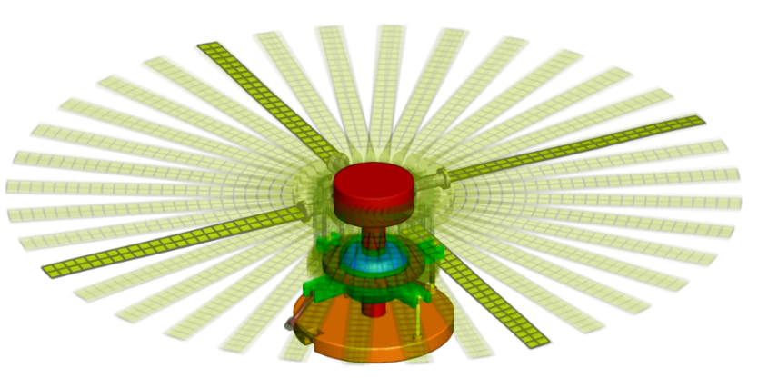
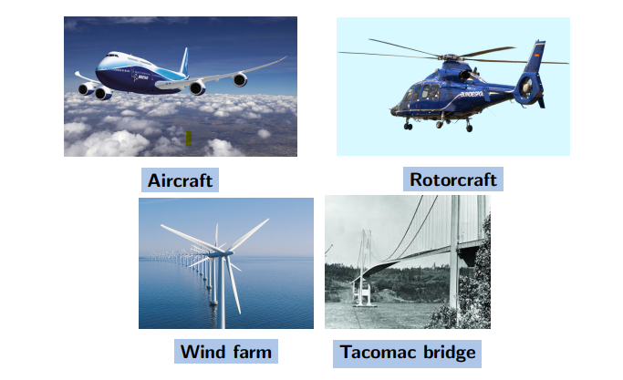
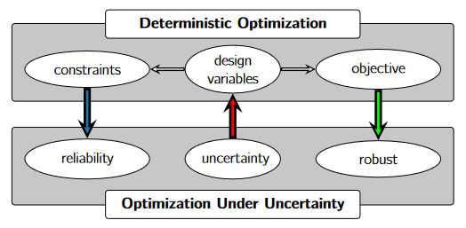
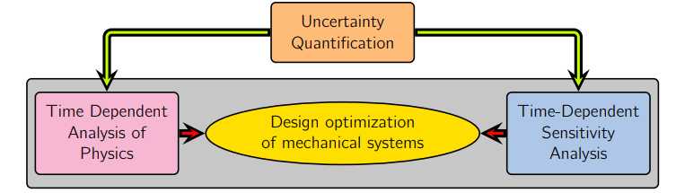
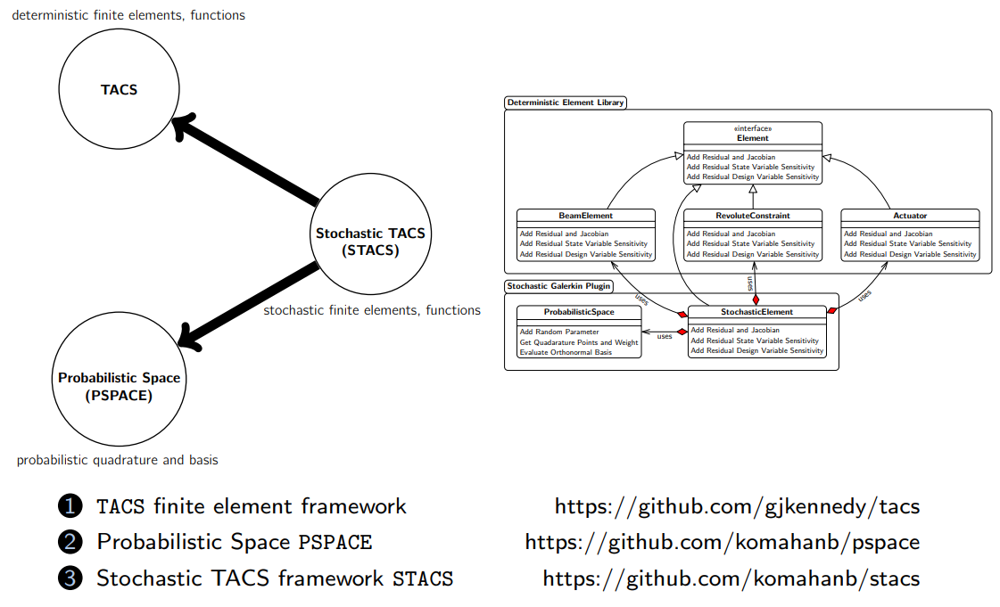
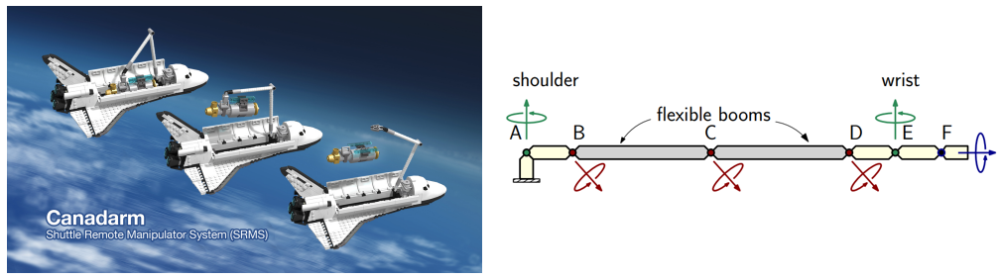

← Publications Thesis 2020
Adjoint Based Design Optimization of Systems with Time Dependent Physics and Probabilistically Modeled Uncertainties
Ph.D. Dissertation; School of Aerospace Engineering, Georgia Institute of Technology, Atlanta, Georgia, 2020
Summary

For aerospace structures, failure can occur not only because of static adversities like divergence, but also due to time dependent issues like flutter and large vibrations. Therefore, the consideration of time-domain physics becomes essential during design. The physics-based design of aerospace systems involves solving partial differential equations to obtain metrics of interest that guide the design process. These differential equations contain unknown parameters that are sometimes difficult to be characterized as a deterministic value. The uncertainties in input parameters have a direct impact on the output metrics of interest which guide the system design process. To this end, optimization under uncertainty has evolved as a field that accounts for the effect of uncertainties, by propagating the effect of uncertainties through physics simulations.

For numerical optimization, the algorithms that do not use gradient information become computationally intractable as the number of design variables increases. Moreover, the numerical approximations of the gradients through the finite-difference or the complex-step methods are inefficient, for their lack of scalability with respect to the number of design variables. Therefore, efficient gradient evaluation techniques such as the adjoint method are needed for solving large scale optimization problems with practical turnaround times. However, because of the inclusion of time dependent physics, the corresponding time dependent adjoint equations needs to be formulated and implemented. Furthermore, the uncertainties need to be propagated through the time dependent physics and the adjoint sensitivity analysis framework. Due to the inherent complexities in the development of time domain physics and adjoint sensitivities analysis capabilities, the sampling-based methods are widely used for the propagation of uncertainties while the projection-based methods are less used.

This work presents enhanced implicit time marching methods for flexible multibody dynamics, to analyze the time dependent behavior of aerospace structures, and formulates the corresponding time dependent adjoint sensitivity analysis equations, to efficiently optimize designs using gradient based methods. The adjoint-based design capabilities are demonstrated with the structural optimization of a rotorcraft hub system.
A newly developed semi-intrusive approach for projection is shown to fully reuse the underlying time-domain analysis and adjoint sensitivity analysis capabilities, for the projection-based propagation of uncertainties. Using this method, the stochastic residuals and Jacobians are formed implicitly from the deterministic counterparts that have been implemented apriori.

The application of the semi-intrusive projection method is shown using a flexible robotic manipulator system modeled after the Canadarm. In the presence of uncertainties in the payloads, the Canadarm system experiences stresses that have a large variability. This work demonstrates the use of uncertainty quantification as a valuable tool for assessing the risk associated with such operating conditions.
